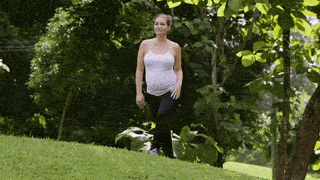
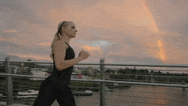
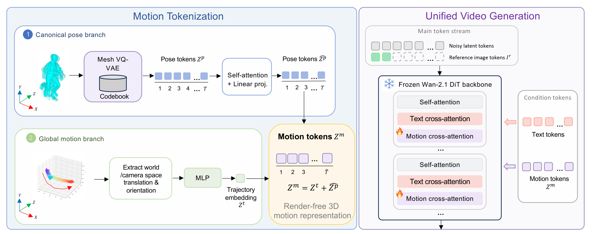

MeshToken


Abstract
Diffusion models have shown remarkable success in video generation. However, whether such models are truly aware of the 3D structure underlying visual observations, rather than simply reproducing plausible 2D projections, remains an open question. In this work, we investigate this question through human motion control, a task that requires precise modelling of 3D human geometry, motion, camera viewpoint, and scene context. Unlike prior methods that rely on rendered 2D motion guidance videos, we propose a render-free framework that conditions video generation directly on compressed 3D human mesh tokens. This representation preserves full 3D geometric information while enabling a unified token-based generation pipeline that processes video tokens jointly with motion tokens in a DiT-based architecture. This design requires the model to reason jointly about appearance, 3D structure, and camera viewpoint during video generation. Experimental results demonstrate strong performance on human motion control benchmarks, while reducing artifacts induced by view-dependent 2D guidance and trajectory-pose mismatches during editing. These findings suggest that video diffusion models, when equipped with mesh tokenization, can better capture complex 3D human structures and their interactions with the surrounding environment.
Method Overview
MeshToken has two stages:
- we first compress the human motion as tokens, from a human mesh with 6890 vertices to 54 motion tokens.
- we then generate human videos conditional on the motion tokens, similar to text prompts.

Visual Comparison on Human Motion Control
Visual Comparison on Human Motion Editing
Visual Results for Ablation Study
Failure Cases